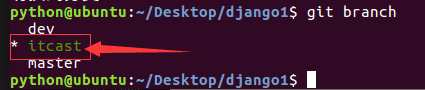

创建项目分支
- 每个员工开发期的代码互不干扰，并行开发，则每人使用一条分支
- 项目开发中公用分支包括master、dev
- 分支master用于发布，默认分支，当需要发布时将dev分支合并
- 分支dev开发阶段性的代码合并，每个阶段的工作完成后需要进行一次，控制项目的进度
- 成员分支用于每个项目成员的代码开发，实现不交叉
- 创建分支
git branch 分支名称
例：
git branch dev
- 切换分支
git checkout 分支名称
例：
git checkout dev
- 将本地分支跟踪服务器分支
git branch --set-upstream-to=origin/分支名称 分支名称
例：
git branch --set-upstream-to=origin/dev dev
- 创建并切换分支
git checkout -b 分支名称
例：
git checkout -b itcast
- 查看所有分支，当前分支前标记为星*
git branch

- 删除分支
git branch -d 分支名称
没有例子，没错，就是没有例子，如果你删除了，我也找不回来哟